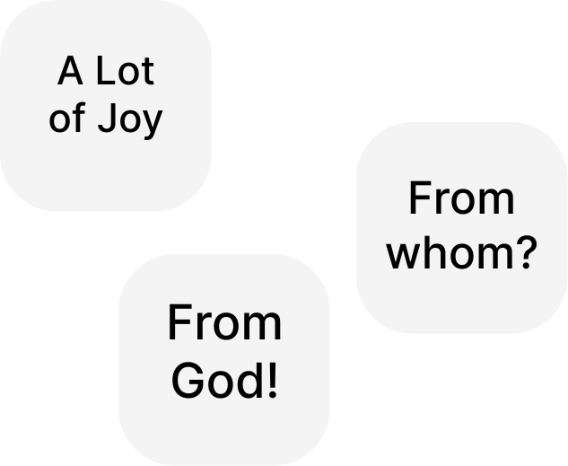

Glory Be to Jesus Christ!
🌞
Since in the work published at the link:
https://oleksandr-zhabenko.github.io/en/commentaries/02082025.html
and even earlier in others, published at the links:
https://churchandsociety.org.ua/pdf/projects/zbirnyk.pdf
https://oleksandr-zhabenko.github.io/en/commentaries/17082024.html
https://oleksandr-zhabenko.github.io/en/commentaries/12112025.html
https://oleksandr-zhabenko.github.io/en/commentaries/27112024.html
it is written that the use of prepositions has important significance for the correct understanding of important and topical questions, particularly the question of power, I am writing comments regarding the use of precisely these prepositions. As advice regarding reading what is written — one can read the verse in translation or/and original (whoever has such possibility), and then the corresponding comment regarding prepositions here. Then it is necessary to understand which part of the verse the comment concerns, and also to consider what essential for understanding it affirms — or more rarely — denies. Such thoughtful reading helps to deepen understanding and protects from the mentioned mistakes.
I prepared an improved version of my research, the presentation of which is available at the link:
https://www.facebook.com/Oleksandr.S.Zhabenko/posts/
https://oleksandr-zhabenko.github.io/uk/commentaries/vystup-2025-hypo-genitive-Romans-XIII_1.pdf
The research material is currently being prepared for publication. I hope, God willing, to present fuller results later after the publication comes out.
I will update the list of references regarding prepositions at the links:
https://oleksandr-zhabenko.github.io/en/commentaries/02082025.html
https://oleksandr-zhabenko.github.io/uk/commentaries/Pryjmennyky.html
the latter — once or twice a month (in Ukrainian), to keep the text version current and up to date.
Translated from Ukrainian by Claude Sonnet 4.6 (Anthropic AI), with subsequent editing by me.
Strong's references (note: according to Strong) in the translation of the original text mean that the word is taken from Strong's dictionary, and the specific meaning was chosen following the translation and commentary by Google Gemini Fast 3.
As Great Lent has begun, the readings from the New Testament are replaced with readings from the Old Testament, in order to urge people more towards repentance.
As it is spoken of several Ancient Greek (Koine) prepositions, the Old Testament readings will continue to be commented upon, examining the first complete translation into Ancient Greek — the Septuagint.
The most widely read are the book of the prophet Isaiah, who is also called the Old Testament evangelist
on account of the clarity of his prophecies concerning Christ, the book of Genesis, from which we learn much concerning the meaning and the need for salvation and concerning God's will, and the book of the Proverbs of Solomon, which is an instructive canonical book, called to raise a person above the commonplace to the threshold of eternity, to prepare them for the higher through the seeking of wisdom rather than of certain earthly gains. All three books, as indeed the whole of the Old Testament, bear witness to Jesus Christ, notwithstanding that each of the books does so in an entirely different manner.
The theme is very profound, but it must be noted at once that the readers and hearers of the Old Testament in its own time differed from people today. The most essential difference was that the depth of understanding, especially the understanding of repentance, conversion and purification, was being formed at that time, and it is precisely for this reason that the reading of Old Testament books takes place first and foremost in the time of the fast, in the time of repentance and preparation, for that which those people encountered is also relevant today.
At the 6th Hour:
Isaiah II, 3 — 'εἰς τὸ ὄρος κυρίου καὶ εἰς τὸν οἶκον τοῦ θεοῦ Ιακωβ' — 'eis to oros kyriou kai eis ton oikon tou theou Iakob' - unto the mountain of the Lord and into the house of the God of Jacob
. That is, whereto
. 'ἐν αὐτῇ' - 'en aute' - in it
. 'ἐκ γὰρ Σιων' - 'ek gar Sion' - for from Sion; for out of Sion
. 'ἐξ Ιερουσαλημ' - 'ex Hierousalem' - from Jerusalem
. In both cases the preposition 'ek' indicates from whence the Law and the Word of the Lord will go forth.
Isaiah II, 4 — 'τὰς μαχαίρας αὐτῶν εἰς ἄροτρα καὶ τὰς ζιβύνας αὐτῶν εἰς δρέπανα' — 'tas makhairas auton eis arotra kai tas zibyna auton eis drepana' - their swords into ploughshares and their spears into sickles (note: according to Strong)
. The preposition 'eis' indicates into what the weapons will be forged.
Isaiah II, 6 — 'ἀπ' ἀρχῆς' — 'ap arkhes' - from the beginning
. The preposition 'apo' in its form before the following vowel indicates the starting point of the reckoning of time. A common expression.
Isaiah II, 10 — 'εἰσέλθετε εἰς τὰς πέτρας καὶ κρύπτεσθε εἰς τὴν γῆν ἀπὸ προσώπου τοῦ φόβου κυρίου καὶ ἀπὸ τῆς δόξης τῆς ἰσχύος αὐτοῦ' — 'eiselthete eis tas petras kai kryptesthe eis ten gen apo prosopou tou phobou kyriou kai apo tes doxes tes iskhyos autou' - enter into the rocks and hide (note: according to Strong) in the earth from the face of the fear of the Lord and from the glory of His strength
. The preposition 'eis' indicates whereto to move (although that movement is in vain), while the preposition 'apo' indicates from what to flee (again in vain), so as to have nothing in common. One may distance oneself from God, but it is impossible to do so fully and completely.
Isaiah II, 11 — 'ἐν τῇ ἡμέρᾳ ἐκείνῃ' — 'en te hemera ekeine' - in that day; on that day
. When.
Verse 4 has become a winged saying and is a prophecy concerning the Kingdom of God. It is precisely in it that people will have no weapons and will not wage war.
In general the reading explains why God's intervention
is needful.
On the readings from the Prophets see the links:
https://oleksandr-zhabenko.github.io/en/commentaries/05032025.html
https://oleksandr-zhabenko.github.io/en/commentaries/20032024.html
https://oleksandr-zhabenko.github.io/en/commentaries/01032023.html
At Vespers:
Genesis I, 29 — 'ἐν ἑαυτῷ' — 'en heauto' - in itself
. 'ἔσται εἰς βρῶσιν' - 'estai eis brosin' - let it be for food; let it be as food (note: according to Strong)
. Here it is not so much a commandment (for in due course people began to eat the flesh of animals, which was not a transgression of these words of God), as a description of what people will do. The Lord teaches people to eat. This is important, as it indicates that He cares for their needs.
Genesis I, 30 — 'ἐν ἑαυτῷ' — 'en heauto' - in itself
. 'εἰς βρῶσιν' - 'eis brosin' - for food; as food (note: according to Strong)
. See just above.
Genesis II, 2 — 'ἐν τῇ ἡμέρᾳ τῇ ἕκτῃ' — 'en te hemera te hekte' - in six days
. 'ἀπὸ πάντων τῶν ἔργων' - 'apo panton ton ergon' - from all the works
. The preposition 'apo' indicates that the Lord ceased from them entirely, that is, they were completed and full, lacking nothing further.
Genesis II, 3 — 'ἐν αὐτῇ κατέπαυσεν ἀπὸ πάντων τῶν ἔργων αὐτοῦ' — 'en aute katepausen apo panton ton ergon autou' - in it He rested (note: according to Strong) from all His works
. See above.
Today's reading is devoted to the 6th and 7th days of creation. Again a very profound text, to which that written at the links also pertains:
https://oleksandr-zhabenko.github.io/en/commentaries/23022026.html
https://oleksandr-zhabenko.github.io/en/commentaries/24022026.html
Interesting materials on this theme are the books: David W Gooding and John C Lennox. Being Truly Human: The Limits of Our Worth, Power, Freedom and Destiny, Myrtlefield House, 2018.
David W Gooding and John C Lennox. Finding Ultimate Reality: In Search of the Best Answers to the Biggest Questions, Myrtlefield House, 2018.
David W Gooding and John C Lennox. Questioning Our Knowledge: Can we Know What we Need to Know?, Myrtlefield House, 2019.
I shall note that animals, like plants, are created after their kind
, while the person is created in the image of God
. Whatever specific content one may put into these words (for example, by the image of God
one may understand the immortal soul, or the fact that every person is a person, or freedom and reason, or something similar), yet by this the difference in the origin of the person and of animals and plants is underscored.
Our
— underscores the fact that God is the Most Holy Trinity — the Father, the Son and the Holy Spirit. By the way, the word God
in the Old Testament very frequently stands in the plural — Elohim
, where im
indicates the plural, while the verbs concerning God are in the singular, by which the unity of the Most Holy Trinity is underscored (on the pattern of Gods created
).
The 1st chapter of the book of Genesis inscribes
the person into the general context of the creation of the whole world, while at the same time the 2nd chapter is addressed to the person themselves as a unique being. If in the 1st chapter the person appears as a particular part of nature, of creation in general, then in the 2nd we see their relations with God and greater specificity. In the 1st chapter the participation of the Trinity is outlined, along with the dialogue and the address of God to the person, while in the 2nd we see a picture of the relations. This may be conditioned by the simple logic of the narrative, where the depth increases as the account proceeds — first an introduction, and then a history and relations. But it may also be an important indication and shed light on who the person is. This may mean that the person unfolds
fully in relations with God and in personal actions and communication. This may help to understand the whole history of the creation of the world itself.
Male and female He created them
— the equality in nature of men and women, boys and girls, their single nature — the human nature — is underscored.
On God's dialogue see a fine poem at the link:
https://www.instagram.com/p/DT6X5acAk52/
There are many questions that require an answer, and consequently arouse seeking and interest. For example, God created not death
, yet already in Paradise, before the fall of people, the food for people and animals was herbs and fruits, and this consumption was not called death
, but was an organic constituent of life.
Another interesting question: is the order of dominion over animals in God's blessing significant or not? Does it mean that one ought to begin by giving more attention to sea creatures (fish), then to birds, then to land animals, then to those living in the ground (soil) and in mixed conditions? Or is this order simply the reverse of the order of their creation by the Word of God — and means only that God brought all the animals to the people in LIFO / FILO order — those created last, being closer to the people (having perhaps not gone far), were brought first, while those created first were already further away — and therefore came last?
In general, ought one to understand this as scientific material, or as a description of meaning (for example, the Venerable Maximus the Confessor, a father of the Church, understood it thus, that here it is spoken first and foremost not of creation itself, but more of God's designs — the seminal logoi, the ideas — concerning it, and how those designs then interacted with matter)? Or is it precisely here that the organic unity
of different layers of understanding described in the first link above is portrayed?
https://oleksandr-zhabenko.github.io/en/commentaries/23022026.html
For example, concerning the seventh day of creation — it is precisely the organic integral unity
of meanings that is presupposed by the text. According to the understanding of the fathers, the seventh day of creation continues to this very day and will continue until the Second Coming, when the eighth and eternal day of creation will begin, whilst at the same time God (in particular the Father) continues to provide for and to act in creation. At the same time, it is precisely this structure of creation that gave rise to the 4th commandment concerning the Sabbath — the seventh day of rest.
For more on the readings from the Law see the links:
https://www.instagram.com/p/DT6X5acAk52/
https://oleksandr-zhabenko.github.io/en/commentaries/05032025.html
https://oleksandr-zhabenko.github.io/en/commentaries/20032024.html
https://oleksandr-zhabenko.github.io/en/commentaries/01032023.html
Proverbs II, 1 — 'παρὰ σεαυτῷ' — 'para seauto' - in the vicinity of yourself
. The preposition 'para' here with the dative case indicates that one must keep this close to oneself, that is, these are deeply personal commandments.
Proverbs II, 2 — 'εἰς σύνεσιν' — 'eis synesin' - unto understanding; unto the mind (note: according to Strong)
. The preposition 'eis' indicates whereto the directing and movement of the heart occurs.
Proverbs II, 6 — 'ἀπὸ προσώπου αὐτοῦ' — 'apo prosopou autou' - from His face
. The preposition 'apo' indicates that this is God's gift to people.
Proverbs II, 10 — 'εἰς σὴν διάνοιαν' — 'eis sen dianoian' - into your deep thoughts; into your ponderings; into your reasonings (note: according to Strong)
. That is, it will enter whereto
.
Proverbs II, 12 — 'ἀπὸ ὁδοῦ κακῆς καὶ ἀπὸ ἀνδρὸς λαλοῦντος μηδὲν πιστόν' — 'apo hodou kakes kai apo andros lalountos meden piston' - from the evil way and from the man that speaks nothing worthy of trust (note: according to Strong)
. The preposition 'apo' indicates that the Lord through the words of Solomon strives to save us from evil and deceit.
Proverbs II, 13 — 'ἐν ὁδοῖς σκότους' — 'en hodois skotous' - in the ways of darkness (note: according to Strong)
.
Proverbs II, 16 — 'τοῦ μακράν σε ποιῆσαι ἀπὸ ὁδοῦ εὐθείας' — 'tou makran se poiesai apo hodou eutheias' - to remove you far from the straight way (note: according to Strong)
. The preposition 'apo' indicates that they wish to remove one completely.
Proverbs II, 18 — 'παρὰ τῷ θανάτῳ' — 'para to thanato' - in the vicinity of the death
. 'παρὰ τῷ ᾅδῃ' - 'para te hade' - in the vicinity of the hades
. The preposition 'para' here with the dative case indicates near to what the tempters and temptresses are situated.
Proverbs II, 19 — 'ἐν αὐτῇ' — 'en aute' - in it
. 'οὐ γὰρ καταλαμβάνονται ὑπὸ ἐνιαυτῶν ζωῆς' - 'ou gar katalambanontai hypo eniauton zoes' - will not attain (will not have, will not see, will not find) the long years of life (longevity) (note: according to Strong)
. The preposition 'hypo' here with the genitive case indicates that in the case of joining oneself to tempters or temptresses a person will not be crowned with long life.
Proverbs II, 21 — 'ὑπολειφθήσονται ἐν αὐτῇ' — 'hypoleiphthesontai en aute' - shall remain (shall continue to dwell) (note: according to Strong) in it
.
Proverbs II, 22 — 'ἐκ γῆς' — 'ek ges' - from the earth
. That is, from whence
. 'ἀπ' αὐτῆς' - 'ap autes' - from it
. The preposition 'apo' indicates that the lawless will be fully deprived of the earth, that is, will be in torment.
On the fear of God there are fine works at the links:
https://www.facebook.com/Oleksandr.S.Zhabenko/posts/
https://www.facebook.com/groups/1539152859716654/?multi_permalinks=3554517061513547
https://oleksandr-zhabenko.github.io/en/DialogueOnWordsChristFear.html
Wisdom is depicted as a gift of God (one of the gifts of the Holy Spirit), as that which makes life better, which makes the difficult simpler.
What follows is a warning against sin. And a prophecy concerning the Kingdom of God.
For more on the readings from the Poetical Books see the links:
https://oleksandr-zhabenko.github.io/en/commentaries/05032025.html
https://oleksandr-zhabenko.github.io/en/commentaries/20032024.html
https://oleksandr-zhabenko.github.io/en/commentaries/01032023.html
Glory be to Thee, our God, glory be to Thee!